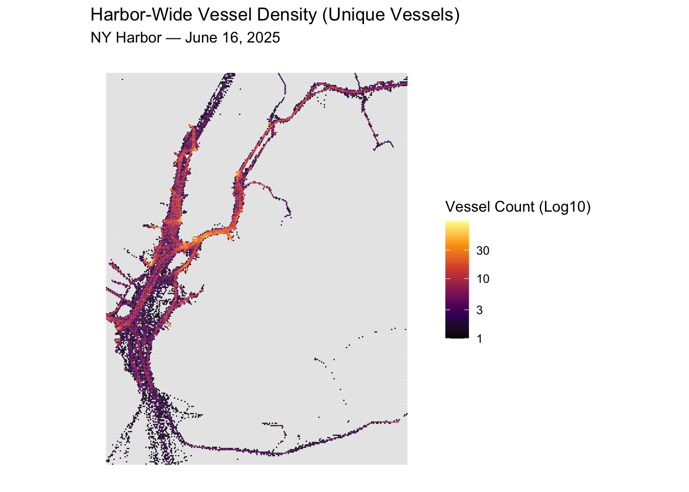
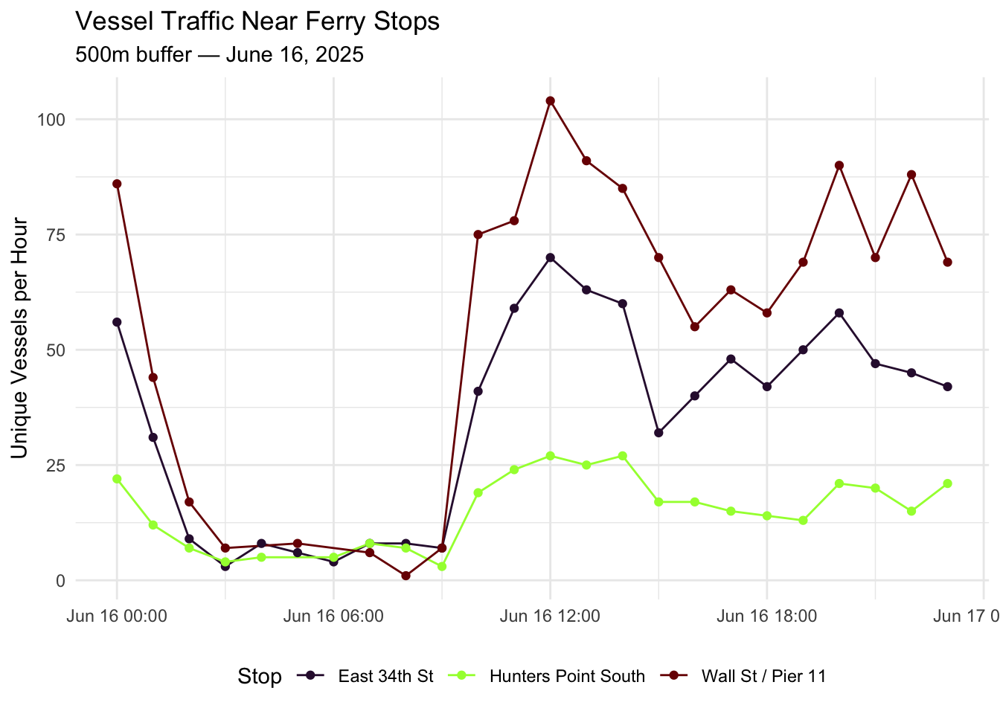
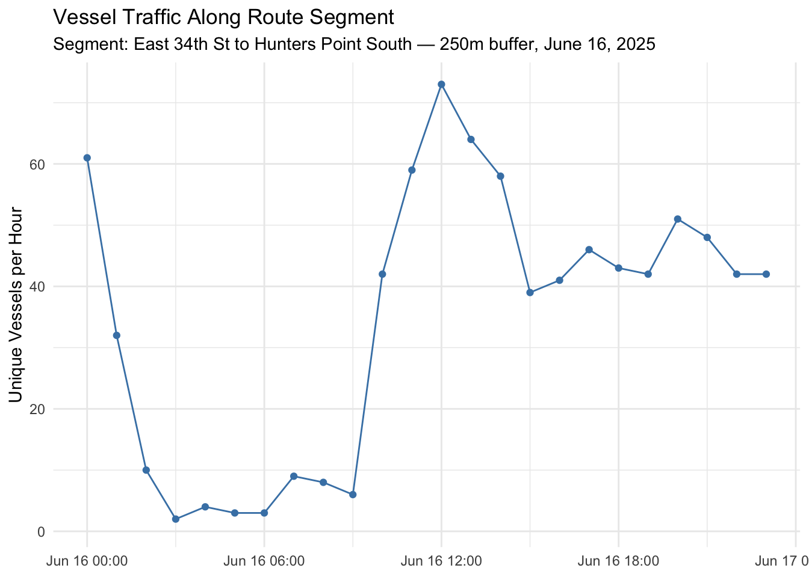

Code
# Set options
options(scipen = 999)
# Packages
if(!require(pacman)){install.packages("pacman"); library(pacman, quietly = T)}
p_load(tidyverse, sf, viridis, lubridate)2026 MUSA Practicum Project Supporting the NYC Economic Development Corportation
# Set options
options(scipen = 999)
# Packages
if(!require(pacman)){install.packages("pacman"); library(pacman, quietly = T)}
p_load(tidyverse, sf, viridis, lubridate)By: Sujan Kakumanu
At a high level, AIS (Automatic Identification System) allows large marine vehicles to report their status (location, speed, heading, voyage data, etc). This is used to communicate with other vessels and authorities on-shore (traffic management, for example).
Depending on the size of the vessel, data can be transmitted as frequently as every 2 seconds. As a result, the provided data sets are incredibly large. The analysis code below focuses on one CSV (AIS from June 2025 in NY Harbor). This file is still too large, and will not be uploaded alongside this script.
Sources:
AIS Data Dictionary: https://coast.noaa.gov/data/marinecadastre/ais/data-dictionary.pdf Vessel type codes: https://coast.noaa.gov/data/marinecadastre/ais/VesselTypeCodes2018.pdf US Coast Guard AIS Description: https://www.navcen.uscg.gov/automatic-identification-system-overview
Columns of Interest (grouped by loose categories):
For this initial exploration, I want to trim the data down to a specific time frame to help with analysis speed. I picked a Wednesday in June to hopefully get a typical working day of data in the harbor.
# Loading the data. Trimming it to Wednesday June 4th for easier analysis at this point.
ais_06_2025 <- read.csv("AIS_2025.06.csv")
ais_06_16_2025_trimmed <- ais_06_2025 %>%
mutate(base_date_time = ymd_hms(base_date_time)) %>%
filter(date(base_date_time) == ymd("2025-06-16"))
write.csv(ais_06_16_2025_trimmed, "AIS_2025_06_16_filtered.csv", row.names = FALSE)ais_06_16_2025_trimmed <- read.csv("../exploratory_code/ais-eda/AIS_2025_06_16_filtered.csv")Frequency of Vessel Types Below is a visual of how many pings certain vessel types are sending.
ggplot(ais_06_16_2025_trimmed, aes(x = as.factor(vessel_type))) +
geom_bar(fill = "steelblue") +
labs(title = "Frequency of Vessel Types",
subtitle = "June 16, 2025 - NY Harbor",
x = "Vessel Type Code",
y = "Number of Pings") +
theme_minimal()
Most Common Vessel codes:
Vessel Size
ggplot(ais_06_16_2025_trimmed, aes(x = length)) +
geom_histogram(binwidth = 10, fill = "steelblue", color = "white") +
labs(title = "Distribution of Vessel Lengths",
x = "Length (meters)",
y = "Count") +
theme_minimal()
Traffic Volume
# Note that I ignore docking/docked ships. Noticed a lot of zeros
ais_06_16_2025_trimmed %>%
filter(sog > 0.5) %>%
ggplot(aes(x = sog)) +
geom_histogram(binwidth = 1, fill = "darkblue", color = "white") +
labs(title = "Speed Distribution of Moving Vessels",
subtitle = "Excludes stationary vessels (SOG > 0.5 knots)",
x = "Speed Over Ground (knots)",
y = "Number of Pings") +
theme_minimal()
We can aggregate traffic to hexbin cells to understand traffic patterns. Instead of counting pings (raw transmissions) per hexbin, we count unique vessels (distinct MMSIs). This matters because a slow-moving tanker anchored for hours generates far more pings than a fast tug crossing the harbor — ping count reflects dwell time, not traffic volume. Vessel count is a more honest measure of how busy a given area of the harbor actually is.
Data Loading Same June 16–22 subset as before.
ais <- read.csv("../exploratory_code/ais-eda/AIS_2025_06_16_filtered.csv") %>%
mutate(
base_date_time = ymd_hms(base_date_time),
date = as.Date(base_date_time),
hour = hour(base_date_time)
)We created a geojson containing a stable hexbin grid to be used for our project.
ais_sf <- ais %>%
filter(sog > 0.5) %>%
drop_na(longitude, latitude) %>%
st_as_sf(coords = c("longitude", "latitude"), crs = 4326) %>%
st_transform(32118)
fishnet <- st_read("../exploratory_code/hex_grid_100m.geojson") %>%
st_transform(32118) %>%
mutate(grid_id = row_number())Reading layer `hex_grid_100m' from data source
`/Users/sujankakumanu/Documents/musa-8010-nycedc/exploratory_code/hex_grid_100m.geojson'
using driver `GeoJSON'
Simple feature collection with 70742 features and 0 fields
Geometry type: POLYGON
Dimension: XY
Bounding box: xmin: 293123.6 ymin: 43240.14 xmax: 314873.6 ymax: 71501.44
Projected CRS: NAD83 / New York Long IslandAggregating to Vessel Count
We filter to moving vessels (SOG > 0.5 knots) to exclude anchored or docked ships. Count distinct MMSIs per cell per hour — not raw pings.
traffic <- fishnet %>%
st_join(ais_sf) %>%
filter(!is.na(mmsi)) %>%
group_by(grid_id, date, hour) %>%
summarise(
vessel_count = n_distinct(mmsi),
ping_count = n(),
.groups = "drop"
)Ping Count vs. Vessel Count This is a quick sanity check to make sure we’re on the right path. Most hexbin cells have more pings than unique vessels, which is exactly what we expect. Vessels passing through a cell generate multiple pings.
traffic %>%
st_drop_geometry() %>%
group_by(grid_id) %>%
summarise(
total_pings = sum(ping_count),
total_vessels = sum(vessel_count),
.groups = "drop"
) %>%
filter(total_pings > 0) %>%
ggplot(aes(x = total_pings, y = total_vessels)) +
geom_point(alpha = 0.3, color = "steelblue") +
geom_abline(linetype = "dashed", color = "red") +
labs(
title = "Ping Count vs. Vessel Count per Hexbin Cell",
x = "Total Pings",
y = "Total Unique Vessels"
) +
theme_minimal()
Aggregated across the full day to show overall traffic patterns in the harbor. Note the use of a log scale — vessel counts vary dramatically across cells, and a log transformation allows us to see variation in both busy and quiet areas. Log10 is used for better interpretability.
traffic_day <- traffic %>%
st_drop_geometry() %>%
group_by(grid_id) %>%
summarise(vessel_count = sum(vessel_count), .groups = "drop")
fishnet %>%
left_join(traffic_day, by = "grid_id") %>%
ggplot() +
geom_sf(aes(fill = vessel_count), color = NA) +
scale_fill_viridis_c(option = "inferno", trans = "log10", na.value = "grey90") +
labs(
title = "Harbor-Wide Vessel Density (Unique Vessels)",
subtitle = "NY Harbor — June 16, 2025",
fill = "Vessel Count (Log10)"
) +
theme_minimal() +
theme(axis.text = element_blank(), panel.grid = element_blank())
Here, we can see some clear patterns that are validated by our domain knowledge. The East River shows a lot of traffic in a tight corridor. Same with the Hudson River, flowing into the area north of the Staten Island.
Just to explore, I take 3 major ferry stops (hunters point south isn’t “major”, but just an interesting one): Question: how does vessel traffic in the surrounding area vary across the day? NOTE: Stops are hard coded here. This is only for exploration purposes. NOTE 2: We’re using 500m buffers to understand patterns further away from stops. The fishnet is still 200m.
ferry_stops <- tibble(
stop_name = c("Wall St / Pier 11", "East 34th St", "Hunters Point South"),
longitude = c(-74.00625, -73.97095, -73.96137),
latitude = c(40.70322, 40.74409, 40.74185)
) %>%
st_as_sf(coords = c("longitude", "latitude"), crs = 4326) %>%
st_transform(32118)
stop_buffers <- ferry_stops %>%
mutate(geometry = st_buffer(geometry, dist = 500))
stop_cells <- fishnet %>%
st_join(stop_buffers) %>%
filter(!is.na(stop_name)) %>%
st_drop_geometry() %>%
select(grid_id, stop_name)
stop_traffic <- traffic %>%
st_drop_geometry() %>%
inner_join(stop_cells, by = "grid_id") %>%
group_by(stop_name, date, hour) %>%
summarise(vessel_count = sum(vessel_count), .groups = "drop") %>%
mutate(
date = as.Date(date),
datetime = ymd_h(paste(date, hour))
)
ggplot(stop_traffic, aes(x = datetime, y = vessel_count, color = stop_name)) +
geom_line() +
geom_point(size = 1.5) +
labs(
title = "Vessel Traffic Near Ferry Stops",
subtitle = "500m buffer — June 16, 2025",
x = NULL,
y = "Unique Vessels per Hour",
color = "Stop"
) +
scale_color_viridis_d(option = "turbo") +
theme_minimal() +
theme(legend.position = "bottom")
Beyond stop-level traffic, we want to look at traffic ferries encounter as they transit between stops. This is particularly valuable for understanding in-water delays.
The route geometry below is a straight-line placeholder between East 34th St and Hunters Point South. NOTE: This will be replaced with real SWIFTLY route geometry once that data is wrangled.
# Placeholder: straight line East 34th St -> Hunters Point South
# To be replaced with SWIFTLY route geometry
route_placeholder <- st_sfc(
st_linestring(
matrix(c(-73.97095, 40.74409,
-73.96137, 40.74185),
ncol = 2, byrow = TRUE)
),
crs = 4326
) %>%
st_transform(32118) %>%
st_sf() %>%
mutate(route_id = "east_34th_to_hunters_point")
# Buffer 250m along the route corridor
route_buffer <- route_placeholder %>%
st_buffer(dist = 250)
# Find fishnet cells intersecting the corridor
route_cells <- fishnet %>%
st_join(route_buffer) %>%
filter(!is.na(route_id)) %>%
st_drop_geometry() %>%
select(grid_id, route_id)
# Vessel count along corridor by hour
route_traffic <- traffic %>%
st_drop_geometry() %>%
inner_join(route_cells, by = "grid_id") %>%
group_by(route_id, date, hour) %>%
summarise(vessel_count = sum(vessel_count), .groups = "drop") %>%
mutate(datetime = ymd_h(paste(date, hour)))
ggplot(route_traffic, aes(x = datetime, y = vessel_count)) +
geom_line(color = "steelblue") +
geom_point(size = 1.5, color = "steelblue") +
labs(
title = "Vessel Traffic Along Route Segment",
subtitle = "Segment: East 34th St to Hunters Point South — 250m buffer, June 16, 2025",
x = NULL,
y = "Unique Vessels per Hour"
) +
theme_minimal()
To make the feature concrete, the tables below show what joined observations will look like in the final modeling dataset. The first table shows the stop-level feature, the second shows the route corridor feature. In practice these will be joined to the stop-level delay data by stop, route, date, and hour.
stop_traffic %>%
filter(hour %in% c(8, 12, 17)) %>%
select(stop_name, date, hour, vessel_count) %>%
arrange(stop_name, hour) %>%
knitr::kable(caption = "Sample: AIS Traffic Feature at Stop Level")| stop_name | date | hour | vessel_count |
|---|---|---|---|
| East 34th St | 2025-06-16 | 8 | 8 |
| East 34th St | 2025-06-16 | 12 | 70 |
| East 34th St | 2025-06-16 | 17 | 48 |
| Hunters Point South | 2025-06-16 | 8 | 7 |
| Hunters Point South | 2025-06-16 | 12 | 27 |
| Hunters Point South | 2025-06-16 | 17 | 15 |
| Wall St / Pier 11 | 2025-06-16 | 8 | 1 |
| Wall St / Pier 11 | 2025-06-16 | 12 | 104 |
| Wall St / Pier 11 | 2025-06-16 | 17 | 63 |
route_traffic %>%
filter(hour %in% c(8, 12, 17)) %>%
select(route_id, date, hour, vessel_count) %>%
arrange(hour) %>%
knitr::kable(caption = "Sample: AIS Traffic Feature Along Route Corridor")| route_id | date | hour | vessel_count |
|---|---|---|---|
| east_34th_to_hunters_point | 2025-06-16 | 8 | 8 |
| east_34th_to_hunters_point | 2025-06-16 | 12 | 73 |
| east_34th_to_hunters_point | 2025-06-16 | 17 | 46 |
# 500m context buffer
crop_extent <- route_placeholder %>%
st_buffer(500) %>%
st_bbox()
corridor_traffic <- traffic %>%
st_drop_geometry() %>%
inner_join(route_cells, by = "grid_id") %>%
filter(hour %in% c(8, 12, 17)) %>%
group_by(grid_id, hour) %>%
summarise(vessel_count = sum(vessel_count), .groups = "drop") %>%
left_join(fishnet, by = "grid_id") %>%
st_as_sf()
ggplot() +
geom_sf(data = fishnet %>% st_crop(crop_extent), fill = "grey95", color = NA) +
geom_sf(data = corridor_traffic, aes(fill = vessel_count), color = NA) +
geom_sf(data = route_placeholder, color = "white", linewidth = 0.8) +
scale_fill_viridis_c(option = "inferno", na.value = "grey80") +
coord_sf(xlim = c(crop_extent["xmin"], crop_extent["xmax"]),
ylim = c(crop_extent["ymin"], crop_extent["ymax"])) +
facet_wrap(~hour, nrow = 1, labeller = as_labeller(c(
"8" = "08:00 AM",
"12" = "12:00 PM",
"17" = "05:00 PM"
))) +
labs(
title = "Vessel Traffic Along Route Corridor by Hour",
subtitle = "East 34th St to Hunters Point South — 250m buffer, June 16, 2025",
fill = "Vessel Count"
) +
theme_minimal() +
theme(axis.text = element_blank(), panel.grid = element_blank())
Through this project process, we wrote a lot of code that is not meaningful toward our final results. You can view that below.